ESP32-C6 多传感器 RS485 采集节点硬件方案报告
日期：2026-05-29
1. 结论
本方案建议把每块 ESP32-C6 做成一个独立采集节点：本地接入 GY-302/BH1750 光照模块、DHT22/AM2302 温湿度模块、HC-SR501 PIR 人体红外模块，再通过 3.3V RS485 收发器接入一条 A/B/GND 总线。战舰 V3 侧也外接一块 3.3V RS485 模块作为主站收发器；不要把 P7 上的 485TX/485RX 当成 RS485 总线的 A/B 端子。
这样做的原因很直接：一个 ESP32-C6 接一套传感器时，TTL UART 可以点对点发送；但两个以上 ESP32-C6 不能把 TX 直接并到战舰 V3 的同一个 RX 上，否则会出现总线争用。RS485 半双工总线适合多个采集节点共线，只要协议规定“主站点名，节点应答”，就能避免同时发送。
供电和 GND 的结论必须单独说明：
- ESP32 节点需要独立供电。战舰 V3 不给两块 ESP32 供电，也不把战舰的
3.3V或5V拉到 ESP32 节点。每块 ESP32 建议用自己的 USB、5V/VIN 或同一个外部 5V 电源分路供电；若用同一个外部 5V 电源，只能共用 5V 输入和 GND，不要把多个开发板的3V3输出互相并联。 - 传感器和本节点 RS485 模块由本节点 ESP32 供电。BH1750、AM2302、本节点 3.3V RS485 模块接本节点 ESP32 的
3V3/GND；HC-SR501 常见模块接本节点5V/VBUS/GND，其OUT接 ESP32 前必须确认高电平不超过 3.3V。 - 所有参与通信的 GND 必须连在一起。战舰 V3
GND、战舰侧外置 RS485GND、RS485 总线GND、每块 ESP32GND、每块节点 RS485GND、各传感器GND都属于同一个参考地网络。这里的“共地”是把所有GND相连，不是把3.3V/5V/VCC相连。 - RS485 主干只跨节点传
A/B/GND。A/B传差分信号，GND做总线参考地；3.3V、5V、VCC不作为跨节点电源线。
默认接线如下：
| 功能 | ESP32-C6 引脚 | 外设端子 | 说明 |
|---|---|---|---|
| BH1750 I2C SDA | GPIO6 / IO6 | SDA | 3.3V I2C |
| BH1750 I2C SCL | GPIO7 / IO7 | SCL | 100 kHz 足够 |
| AM2302 DATA | GPIO11 / IO11 | DATA | DATA 到 3V3 加 4.7k-10k 上拉 |
| HC-SR501 OUT | GPIO10 / IO10 | OUT | 接入前先测 OUT 高电平 |
| RS485 UART TX | GPIO20 / IO20 | DI | ESP32 发送到收发器 |
| RS485 UART RX | GPIO21 / IO21 | RO | 收发器返回 ESP32 |
| RS485 方向控制 | GPIO18 / IO18 | DE 与 /RE | 发送置 1，接收置 0 |
| 本节点 3.3V 电源 | 本节点 ESP32 3V3 |
BH1750、AM2302、本节点 RS485 VCC | 只给本节点小模块供电，不接战舰 3.3V，不接其它 ESP32 的 3V3 |
| 本节点 5V 电源 | 本节点 ESP32 5V/VBUS 或外部 5V |
HC-SR501 VCC | 常见 HC-SR501 模块用 5V |
| 地 | GND | 本节点所有模块 GND，并接 RS485 总线 GND | 必须和战舰、其它节点共地；只共 GND，不共 VCC |
战舰 V3 主站侧默认外接一块 3.3V RS485 模块。当前实物调试使用 USART3 的 PB10/PB11 和 PF12 方向控制；P7 上的 485TX/485RX 不是远端总线的 A/B：
| 战舰 V3 侧信号 | STM32F103 管脚 | 接到哪里 | 说明 |
|---|---|---|---|
PB10 / USART3_TX |
PB10 | 外置 RS485 模块 DI |
战舰发送轮询帧 |
PB11 / USART3_RX |
PB11 | 外置 RS485 模块 RO |
战舰接收节点应答 |
PF12 / GPIO 输出 |
PF12 | 外置 RS485 模块 DE 与 /RE |
发送前置发送态，发送完成后回到接收态 |
战舰 3.3V |
3.3V 电源 | 外置模块 VCC |
选 3.3V RS485 模块 |
战舰 GND |
GND | 外置模块 GND，并接总线 GND |
与所有节点 GND 相连 |
外置 RS485 模块 A |
差分总线 | 总线 A 主干 | 接所有 ESP32 节点 RS485 模块的 A |
外置 RS485 模块 B |
差分总线 | 总线 B 主干 | 接所有 ESP32 节点 RS485 模块的 B |
注意：不同 ESP32-C6 开发板排针物理位置不一致。实际接线时按板子丝印找
GPIO6、IO6、3V3、GND等名称，不按本文示意图中的左右位置照搬。 战舰 V3 板上可能还有 USB 转串口、RS232、蓝牙/串口、扩展排针等多处RX/TX丝印。本文默认不用这些口作为多节点总线入口。P7 上的485TX/485RX是 TTL 侧信号，不是差分A/B总线。
2. 资料归档说明
本报告使用的在线资料已经存入本报告目录下的 references/ 文件夹。报告正文引用本地归档文件，同时在末尾保留原始在线链接，便于复查。ST 官方下载在本机网络环境下多次超时，因此战舰 V3 相关判断以正点原子资料页、战舰 V3 实物资料、以及 STM32F103ZET6 作为 3.3V MCU 的保守接口处理为准；不把未完整下载的 ST 文件列为有效来源。
本地工程 esp32-wroom-c6-workspace/main/app_main.c 已经使用 GPIO6/GPIO7/GPIO10/GPIO11 做过单板传感器读取验证逻辑，本文默认引脚与该工程保持一致，并扩展了 RS485 的 GPIO18/GPIO20/GPIO21。
3. 元件清单与图示依据
下表覆盖本方案的主动模块和开发板。标准电阻、杜邦线、端子线作为辅料，在后续接线图中标出阻值和位置。
| 元件 | 实际图 | 电路图 / 引脚图 |
|---|---|---|
| ESP32-C6-DevKitC-1 / ESP32-C6-WROOM-1 开发板 | 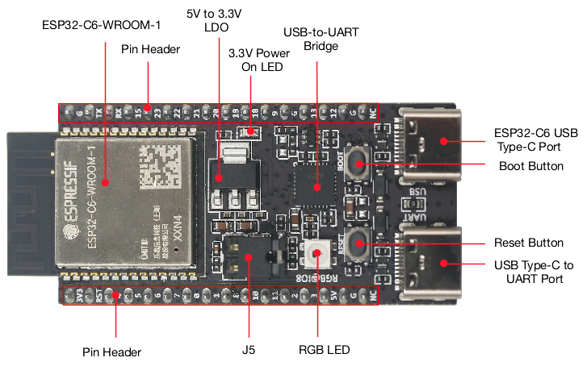 |
官方原理图 PDF， 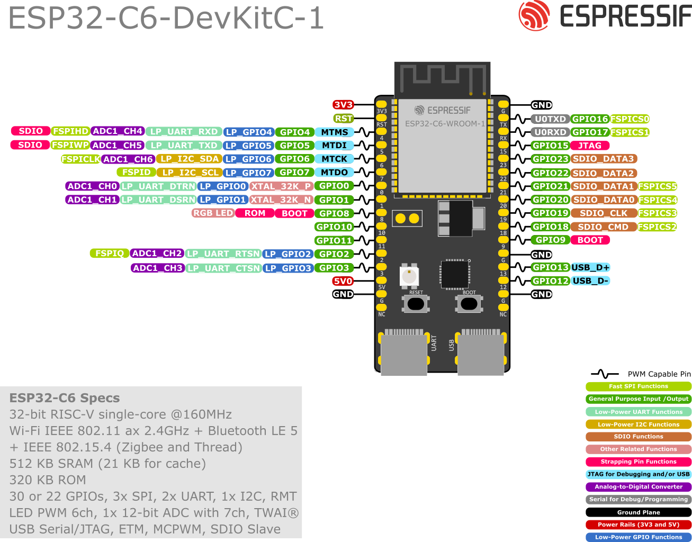 |
| GY-302 / BH1750 光照模块 | 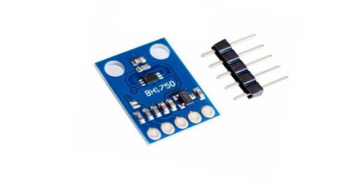 |
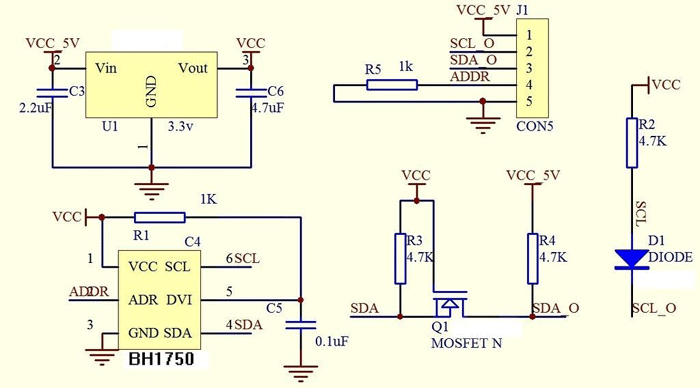 ，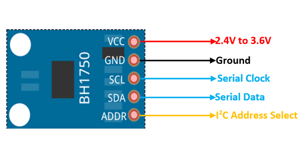 |
| DHT22 / AM2302 温湿度模块 | 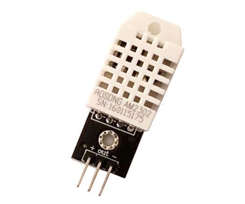 |
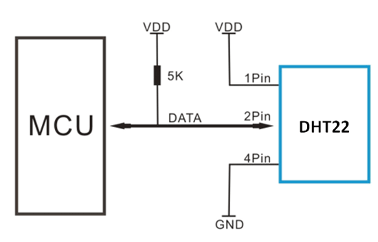 ，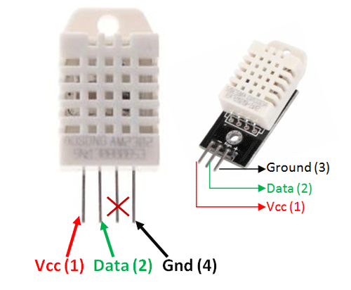 |
| HC-SR501 PIR 人体红外模块 | 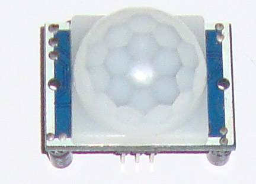 |
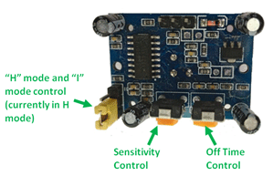 ，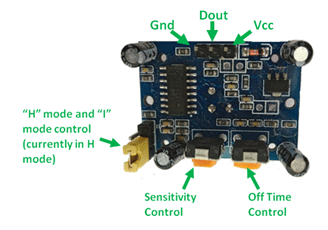 |
| 3.3V RS485 模块 / SP3485 收发器 | 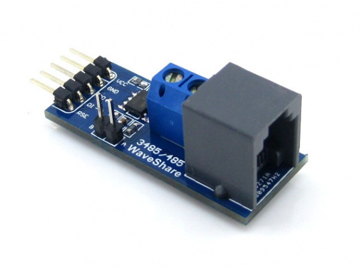 |
Waveshare 模块原理图 PDF，SP3485 数据手册，本文局部电路图 |
| 正点原子战舰 V3 / STM32F103ZET6 | 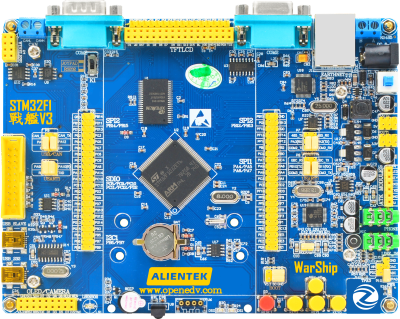 |
正点原子资料页归档，本文给出 RS485 主站接口电路和接线表 |

4. 电气兼容性
| 模块 | 供电建议 | 信号电平 | 与 ESP32-C6 兼容性判断 |
|---|---|---|---|
| ESP32-C6-WROOM-1 | 模组工作 3.0-3.6V；开发板通常由 USB/5V 转 3.3V | GPIO 为 3.3V 逻辑域 | 外部数字信号按 3.3V 处理。避免让 5V 信号直接进 ESP32-C6 GPIO。 |
| BH1750 / GY-302 | 推荐 3.3V | I2C SDA/SCL 上拉到 3.3V | BH1750 芯片 VCC 典型范围覆盖 3.3V，I2C 与 ESP32-C6 直接兼容。 |
| AM2302 / DHT22 | 本方案推荐 3.3V，短线使用 | 单总线 DATA 上拉到 3.3V | AM2302 支持 3.3-5.5V；用 3.3V 时线长不宜超过约 1m，采样间隔不小于 2s。 |
| HC-SR501 | 常见模块用 5V | OUT 常见约 3.3V，但必须实测 | 模块供电接 5V，OUT 接 ESP32 前用万用表确认高电平不超过 3.3V。若为 5V 输出，必须加分压或电平转换。 |
| SP3485 / 3.3V RS485 | 3.3V | DI/RO/DE/RE 与 3.3V MCU 兼容 | 适合 ESP32-C6。不要把 5V MAX485 模块的 RO 直接接 ESP32-C6，除非确认模块 IO 兼容 3.3V。 |
| 战舰 V3 / STM32F103ZET6 | 开发板自身供电 | MCU 侧按 3.3V TTL 处理 | 当前多节点方案中，战舰侧用外置 3.3V RS485 模块，由 USART3_TX/PB10、USART3_RX/PB11、PF12 驱动。不要把 ESP32 GPIO 接到 DB9 RS232 电平口，也不要把 P7 485TX/485RX 当作 A/B 总线。 |
ESP32-C6 的启动配置涉及 GPIO8、GPIO9、GPIO15 等 strapping pins。本方案默认传感器和 RS485 控制避开这些启动敏感脚，减少上电状态被外设拉偏的风险。
5. 单节点完整电路
先看总图，再按接线表施工。
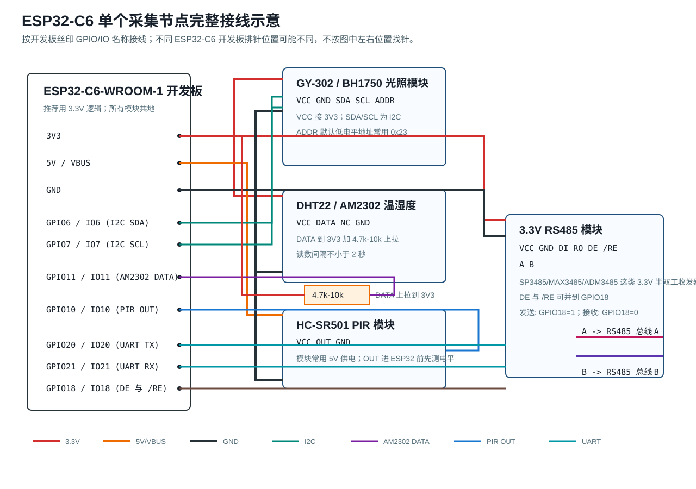
文字版示意如下：
ESP32-C6 开发板丝印/排针 外设模块端子
----------------------- -----------------------------
3V3 ------------------------------> GY-302/BH1750 VCC
3V3 ------------------------------> AM2302 VCC
3V3 ------------------------------> 3.3V RS485 VCC
5V/VBUS ---------------------------> HC-SR501 VCC
GND ------------------------------> GY-302/BH1750 GND
GND ------------------------------> AM2302 GND
GND ------------------------------> HC-SR501 GND
GND ------------------------------> RS485 GND
GPIO6 / IO6 -----------------------> GY-302/BH1750 SDA
GPIO7 / IO7 -----------------------> GY-302/BH1750 SCL
GPIO11 / IO11 ---------------------> AM2302 DATA
GPIO10 / IO10 <-------------------- HC-SR501 OUT
GPIO20 / IO20 ---------------------> RS485 DI
GPIO21 / IO21 <-------------------- RS485 RO
GPIO18 / IO18 ---------------------> RS485 DE 与 /RE
RS485 A ---------------------------> RS485 总线 A
RS485 B ---------------------------> RS485 总线 B
AM2302 DATA 与 3V3 之间加 4.7k-10k 上拉电阻。
HC-SR501 OUT 接 ESP32 前，先用万用表测量高电平。
模块分组接线表：
| 分组 | 模块端子 | 接到哪里 | 检查点 |
|---|---|---|---|
| BH1750 | VCC | ESP32 3V3 | 不接 5V，避免 I2C 上拉到 5V |
| BH1750 | GND | ESP32 GND | 与 ESP32 共地 |
| BH1750 | SDA | GPIO6 / IO6 | 固件中配置为 I2C SDA |
| BH1750 | SCL | GPIO7 / IO7 | 固件中配置为 I2C SCL |
| BH1750 | ADDR | 悬空或 GND | 默认地址常用 0x23；拉高常用 0x5C |
| AM2302 | VCC | ESP32 3V3 | 短线实验推荐 3.3V |
| AM2302 | DATA | GPIO11 / IO11 | DATA 到 3V3 加 4.7k-10k 上拉 |
| AM2302 | GND | ESP32 GND | 与 ESP32 共地 |
| HC-SR501 | VCC | 5V / VBUS | 常见模块需要 5V 供电 |
| HC-SR501 | OUT | GPIO10 / IO10 | 先测高电平，确认不超过 3.3V |
| HC-SR501 | GND | ESP32 GND | 与 ESP32 共地 |
| RS485 | VCC | ESP32 3V3 | 选 3.3V RS485 模块 |
| RS485 | GND | ESP32 GND | 同时作为总线参考地 |
| RS485 | DI | GPIO20 / IO20 | ESP32 UART TX |
| RS485 | RO | GPIO21 / IO21 | ESP32 UART RX |
| RS485 | DE、/RE | GPIO18 / IO18 | 两端可并到同一方向控制脚 |
| RS485 | A、B | 总线 A、B | 若通信不通，可只对调一侧 A/B 测试 |
本节点供电关系如下，避免把“谁给谁供电”混在一起。当前实验如果有两块 ESP32，推荐的实物供电是：战舰 V3 用自己的电源或 USB 供电；每块 ESP32 用自己的 USB 或外部 5V 分路供电；每块 ESP32 再给本节点的小模块供电。
| 电源来源 | 被供电对象 | 是否跨节点/接战舰 V3 | 说明 |
|---|---|---|---|
| 战舰 V3 自身电源 | 战舰 V3 主板、战舰侧外置 3.3V RS485 模块 VCC | 不给 ESP32 节点供电 | 战舰 V3 只作为通信主站。战舰 3.3V 只给战舰侧外置 RS485 模块使用。 |
| 节点 01 ESP32 的 USB/5V/VIN | 节点 01 ESP32 开发板 | 可与其它节点共用同一个外部 5V 电源分路，但不从战舰取电 | 推荐每块 ESP32 独立 USB；若共用一个 5V 电源，5V 分路供电，GND 共地。 |
| 节点 02 ESP32 的 USB/5V/VIN | 节点 02 ESP32 开发板 | 可与节点 01 共用外部 5V 电源分路，但不并联 3V3 输出 |
两块 ESP32 的 3V3 输出不要互相连接，也不要接战舰 3.3V。 |
本节点 ESP32-C6 开发板 3V3 |
本节点 BH1750 VCC、AM2302 VCC、本节点 3.3V RS485 模块 VCC | 不跨节点，不接战舰 V3 的 3.3V | 只给本节点低功耗 3.3V 模块供电；若 ESP32 重启或读数不稳，改用本节点外部 3.3V 稳压电源。 |
本节点 ESP32-C6 开发板 5V/VBUS 或本节点外部 5V |
本节点 HC-SR501 VCC | 不跨节点，不接战舰 V3 的 5V | 常见 HC-SR501 需要 5V。若暂时接 3V3 能读到，不代表长期推荐。 |
| RS485 总线 | 只传 A、B、GND 三根线 | 不传 3.3V/5V/VCC | A/B 是差分信号，GND 是参考地；VCC 不作为总线线缆。 |
所有 GND 的关系必须明确：本节点 ESP32 的 GND、BH1750 GND、AM2302 GND、HC-SR501 GND、本节点 RS485 模块 GND 都接在同一个本地地线上；RS485 总线的 GND 再把本节点地与战舰 V3/其它节点的地连成同一个参考地。也就是说，RS485 的 GND 不是独立悬空地，而是总线参考地，最终要和战舰 V3 GND、每块 ESP32 GND、所有模块 GND 相连。正电源线仍然分开：战舰 3.3V/5V 不接 ESP32 节点，节点之间的 3V3 也不互接。
6. RS485 局部电路
SP3485 类 3.3V 收发器的局部连接如下：
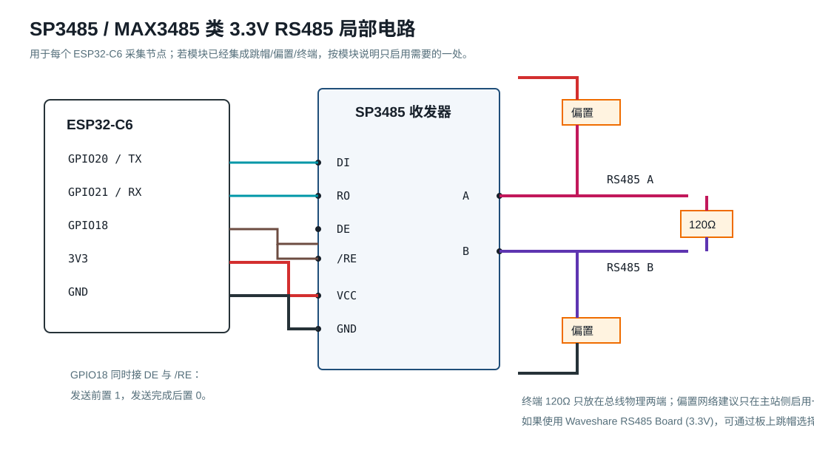
要点：
DI接 ESP32TX，RO接 ESP32RX。DE为发送使能，/RE为接收使能。半双工常见做法是把DE和/RE并到同一个 GPIO：发送前置 1，发送完成后置 0。A/B是差分总线。不同模块可能把 A/B 命名方向做反，表现通常是超时但不会立刻烧坏。排障时只对调一侧 A/B。- 120Ω 终端电阻只放在总线物理两端。中间节点不要重复启用终端。
- 偏置电阻只启用一处，优先放主站侧。若购买的模块已有偏置跳帽，先确认跳帽状态。
7. 多节点到战舰 V3 的最终接线方案
推荐方案 A：战舰 V3 直接作为 RS485 主站。每块 ESP32-C6 采集节点都是从站。
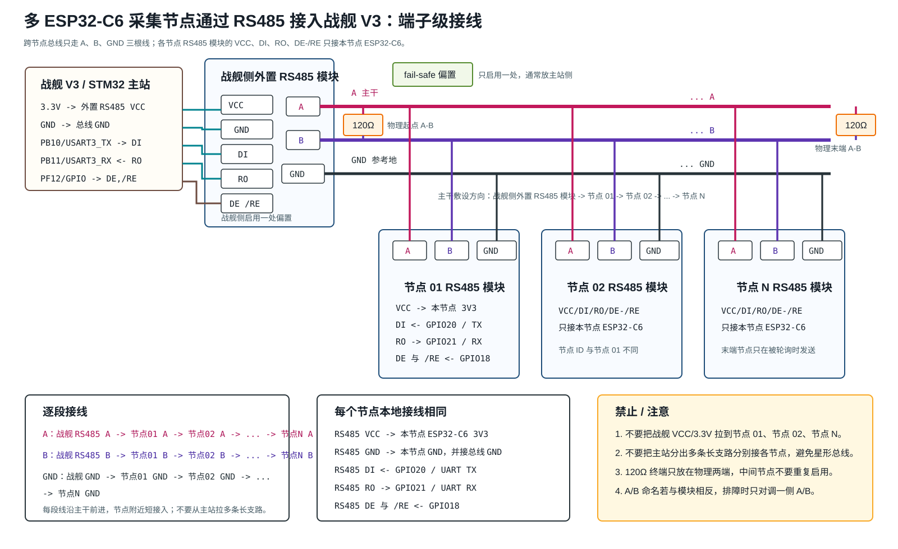
总线文字版示意：
跨节点只连三根线：A、B、GND。不要把主站 3.3V/VCC 拉到各节点。
战舰侧外置 RS485 模块 节点 01 RS485 模块 节点 02 RS485 模块 节点 N RS485 模块
A 端子 -------------> A 端子 ---------------> A 端子 ---- ... -----------> A 端子
B 端子 -------------> B 端子 ---------------> B 端子 ---- ... -----------> B 端子
GND 端子 ------------> GND 端子 --------------> GND 端子 ---- ... ----------> GND 端子
每个节点的 RS485 VCC/DI/RO/DE-/RE 只接本节点 ESP32-C6：
节点 RS485 VCC -> 本节点 ESP32-C6 3V3
节点 RS485 GND -> 本节点 ESP32-C6 GND，同时接总线 GND
节点 RS485 DI <- 本节点 ESP32-C6 GPIO20 / UART TX
节点 RS485 RO -> 本节点 ESP32-C6 GPIO21 / UART RX
节点 RS485 DE 与 /RE <- 本节点 ESP32-C6 GPIO18
只在总线两个物理端点加 120Ω：
端点 1：A 与 B 之间 120Ω
端点 2：A 与 B 之间 120Ω
中间节点不要加 120Ω
主站侧启用一处 fail-safe 偏置；节点侧默认不启用偏置。
战舰 V3 主站侧接线：
根据可查到的战舰 V3 资料和本次实物测试，P7 上的 485TX/485RX 属于板内 RS485 相关 TTL 侧信号，不是可直接接远端总线的 A/B 差分端子。当前可复现方案按实物接线处理：战舰侧外接一块 3.3V RS485 模块，由 PB10/PB11/PF12 控制。
| 战舰 V3 / STM32 侧 | 战舰侧外置 RS485 模块或总线 | 说明 |
|---|---|---|
| 战舰 3.3V | 外置模块 VCC |
选 3.3V RS485 模块 |
| 战舰 GND | 外置模块 GND，同时接总线 GND |
与 ESP32 节点总线 GND 相连 |
PB10 / USART3_TX |
外置模块 DI |
战舰 V3 发送轮询请求 |
PB11 / USART3_RX |
外置模块 RO |
战舰 V3 接收节点应答 |
PF12 / GPIO 输出 |
外置模块 DE 与 /RE |
发送前置发送态，发送完成后回到接收态 |
外置模块 A |
总线 A | 接所有节点 A |
外置模块 B |
总线 B | 接所有节点 B |
如果只使用板上原有跳帽，则 P7 的作用是把 PA2 短接到 485TX、把 PA3 短接到 485RX，相当于处理 USART2 到板内 RS485 相关电路的 TTL 侧连接。它不提供远端 RS485 的 A/B 差分接线点。当前工程不走这一路，而是从外置 RS485 模块的 A/B/GND 走多节点总线。
战舰侧外置 RS485 模块到各节点 RS485 模块的端子级接线：
| 总线 | 第一段 | 第二段 | 后续节点 | 末端 | 说明 |
|---|---|---|---|---|---|
| A 线 | 战舰侧外置 RS485 A -> 节点 01 RS485 A |
节点 01 RS485 A -> 节点 02 RS485 A |
节点 02 A -> ... -> 节点 N A |
节点 N RS485 A |
所有 A 端子是同一根 A 主干；若通信一直超时，只对调一侧 A/B 验证。 |
| B 线 | 战舰侧外置 RS485 B -> 节点 01 RS485 B |
节点 01 RS485 B -> 节点 02 RS485 B |
节点 02 B -> ... -> 节点 N B |
节点 N RS485 B |
所有 B 端子是同一根 B 主干，建议与 A 使用同一对双绞线。 |
| GND 参考线 | 战舰侧外置 RS485 GND -> 节点 01 RS485 GND |
节点 01 RS485 GND -> 节点 02 RS485 GND |
节点 02 GND -> ... -> 节点 N GND |
节点 N RS485 GND |
用作总线参考地。各节点本地 ESP32 的 GND 也要接到本节点 RS485 GND。 |
如果 RS485 模块端子排只有一个 A/B/GND 接线孔，不是再从主站拉多条长线到每个节点。正确做法是在每个节点附近用端子排/WAGO/焊接点把“上一段进线”和“下一段出线”并在同一个 A、B、GND 网络上，节点到主干的短支线尽量短。不要做“主站一端分出很多长支路”的星形接法。
各节点 RS485 模块本地接线相同：
| 节点 RS485 模块端子 | 接到本节点 ESP32-C6 | 是否接到主站/其它节点 | 说明 |
|---|---|---|---|
VCC |
本节点 3V3 |
不接主站 VCC，不接其它节点 VCC |
每个节点本地供电，避免把 3.3V 当长距离电源总线。 |
GND |
本节点 GND |
接总线 GND |
本地地与总线参考地相连。 |
DI |
GPIO20 / IO20 |
不接主站 DI |
ESP32 UART TX 进入本节点收发器。 |
RO |
GPIO21 / IO21 |
不接主站 RO |
本节点收发器输出到 ESP32 UART RX。 |
DE 与 /RE |
GPIO18 / IO18 |
不接其它节点控制脚 | 两脚可并接；发送前置 1，发送完置 0。 |
A |
不接 ESP32 GPIO | 接主站和所有节点的 A |
RS485 差分 A 线。 |
B |
不接 ESP32 GPIO | 接主站和所有节点的 B |
RS485 差分 B 线。 |
RS485 主干施工表：
| 步骤 | 从哪里 | 到哪里 | 说明 |
|---|---|---|---|
| 1 | 战舰侧外置 RS485 A |
节点 01 A，再到节点 02 A，直到节点 N A |
一条连续 A 主干，不做长星形支路 |
| 2 | 战舰侧外置 RS485 B |
节点 01 B，再到节点 02 B，直到节点 N B |
B 与 A 同路由敷设，优先用双绞线 |
| 3 | 战舰侧外置 RS485 GND |
节点 01 GND，再到节点 02 GND，直到节点 N GND |
作为参考地，降低共模漂移 |
| 4 | 物理起点 A/B | 120Ω | 只装在端点 |
| 5 | 物理末端 A/B | 120Ω | 只装在端点 |
| 6 | 主站侧 | 偏置电阻或模块偏置跳帽 | 偏置只启用一处 |
可选方案 B：增加一块 ESP32-C6 网关。网关通过 RS485 轮询采集节点，再通过 3.3V TTL UART 把汇总结果发给战舰 V3。这个方案让战舰 V3 软件更简单，但多一块网关板和一份网关固件。当前若只是课程/实验验证，建议先做方案 A。
明确禁止的接法：
ESP32 节点 01 TX ----+
+---- 战舰 V3 USART_RX 不推荐 / 禁止
ESP32 节点 02 TX ----+
TTL UART 是点对点接口，多个 TX 直接并联会互相驱动。哪怕软件设计了错峰发送，复位日志、异常输出、上电毛刺也可能抢占线路。
8. 默认通信协议
课堂调试和串口助手观察阶段，推荐先用 ASCII 帧，不急着上 Modbus RTU。
主站请求：@Q,ID=03*CS\r\n
节点应答：@D,ID=03,PIR=1,LUX=123.4,T=25.1,H=60.2*CS\r\n
字段建议：
| 字段 | 含义 |
|---|---|
@Q |
Query，主站查询帧 |
@D |
Data，从站数据帧 |
ID |
节点号，建议 01 到 32 |
PIR |
HC-SR501 当前触发状态，0 或 1 |
LUX |
BH1750 光照值，单位 lux |
T |
AM2302 温度，单位摄氏度 |
H |
AM2302 湿度，单位 %RH |
CS |
校验，调试初期可占位，稳定后用 XOR 或 CRC8 |
轮询策略：
- 默认
9600 8N1，短线调试可提高到115200 8N1。 - 主站每次只询问一个 ID，等待 100-300ms；超时记录离线并继续下一个节点。
- AM2302 读数至少间隔 2 秒；节点本地缓存最近一次有效温湿度，主站轮询时直接返回缓存。
- PIR 属于事件/状态量，节点可返回当前电平，也可返回上一个轮询周期内是否触发过。
9. 上电与验证流程
上电前：
- 万用表测 3V3-GND、5V-GND，确认无短路。
- 确认正电源没有跨板误接：战舰
3.3V/5V不接 ESP32 节点；节点 013V3不接节点 023V3；RS485 主干不传VCC。 - 确认所有 GND 已经连通：战舰
GND、战舰侧 RS485GND、RS485 总线GND、每块 ESP32GND、每块节点 RS485GND、传感器GND都应是同一个参考地。 - 只给 HC-SR501 上电，测 OUT 高电平。若 OUT 是 5V，先加分压或电平转换，再接 ESP32。
- 确认 GY-302/BH1750 和 AM2302 的 VCC 接 3V3。
- 确认 RS485 模块为 3.3V 型号，或至少确认
RO/DI/DE/RE与 3.3V MCU 兼容。 - 所有节点上电默认
DE=0，不要一上电就驱动 RS485 总线。
单节点验证：
- 只接 ESP32-C6、BH1750、AM2302、HC-SR501，不接 RS485。
- 用 I2C scanner 或固件日志确认 BH1750 地址，常见为
0x23。 - AM2302 连续读 5 次，间隔不小于 2 秒，温湿度应合理。
- 触发 HC-SR501，观察 GPIO10 从 0 变 1，并注意模块延时旋钮设置。
- 串口打印一行数据，例如
PIR=1,LUX=123.4,T=25.1,H=60.2。
RS485 验证：
- 先只接一个 ESP32 节点和一个 USB-RS485 转换器或战舰 V3 主站。
- 主站发送
@Q,ID=01*CS，确认节点应答@D,ID=01,...。 - 加入第二个节点，配置不同 ID，例如
02。 - 主站轮询
01、02，确认只有被点名节点打开DE应答。 - 启用总线两端 120Ω，确认中间节点终端关闭。
- 断开节点 02 电源，主站应只记录 02 超时，节点 01 继续正常。
10. 最终建议
如果当前只验证一块 ESP32-C6，三类传感器可以直接接在同一块板上，串口日志先跑通。
如果已经确定会有两块或更多 ESP32-C6，并且后续可能扩展到 N 个采集点，从第一版硬件就按 RS485 设计。每个采集节点硬件完全一致，只改节点 ID；战舰 V3 或 ESP32 网关作为主站轮询。这比给战舰 V3 增加多个 UART 更容易扩展，也避免了多个 TTL TX 并联的硬件风险。
推荐落地顺序：
- 完成单节点三传感器采集。
- 给单节点加 3.3V RS485 模块，用 USB-RS485 或战舰 V3 轮询。
- 加第二个节点，验证 ID 和 DE 方向控制。
- 短线稳定后，再整理端子、终端电阻、偏置跳帽和节点标签。
- 若现场线长、干扰或不同电源域明显，再升级到隔离 RS485 模块。